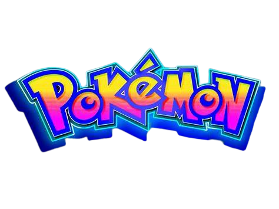
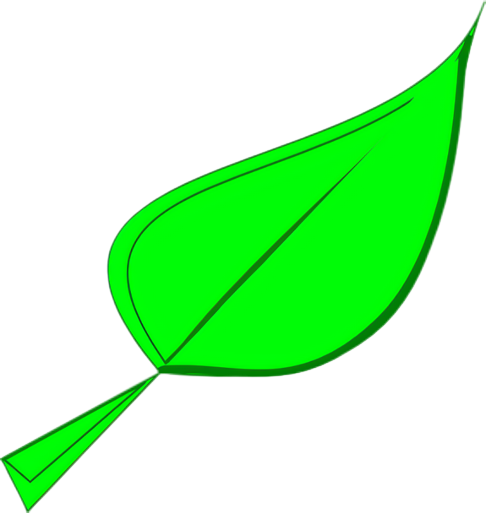
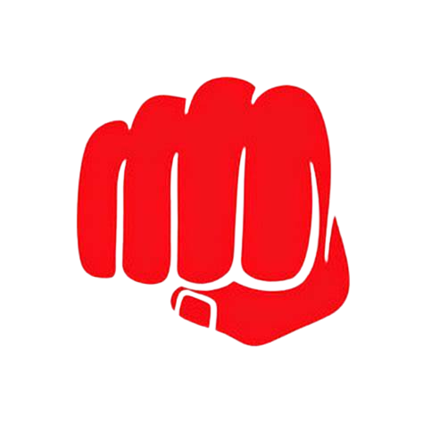

RULES
Le regole sono molto semplici visto anche la semplicità del gioco.
Se conosci almeno un gioco di pokemon allora sai come funzionano le varie mosse e azioni del gioco.
ora ti spiego le mosse che in questo contesto si dividono in due tipi quelle speciali e quelle comuni,
quelle speciali sono due, uno è il fulmine:
e l'altro è la foglia:

come rappresentati dalle immagini,
le ultime due sono il graffio:
e il pugno:

quindi le più comuni.
le mosse comuni infliggono 0.5 di danno mentre le speciali come il fulmine infligge 1 e che può essere utilizzata dopo 3 volte che utilizzi le mosse comuni.
Ogni pokemon ha 5 hp che sta per health point cioè la vita del personaggio.
Il turno viene scelto a caso appena clicchi il tasto PLAY.
Adesso sei pronto per poter giocare.